The everything sensor
Your machines already show their numbers. PanelPal reads them.
Point a small camera at any screen or gauge. Our AI builds a live dashboard for your site. No wiring and no engineer.
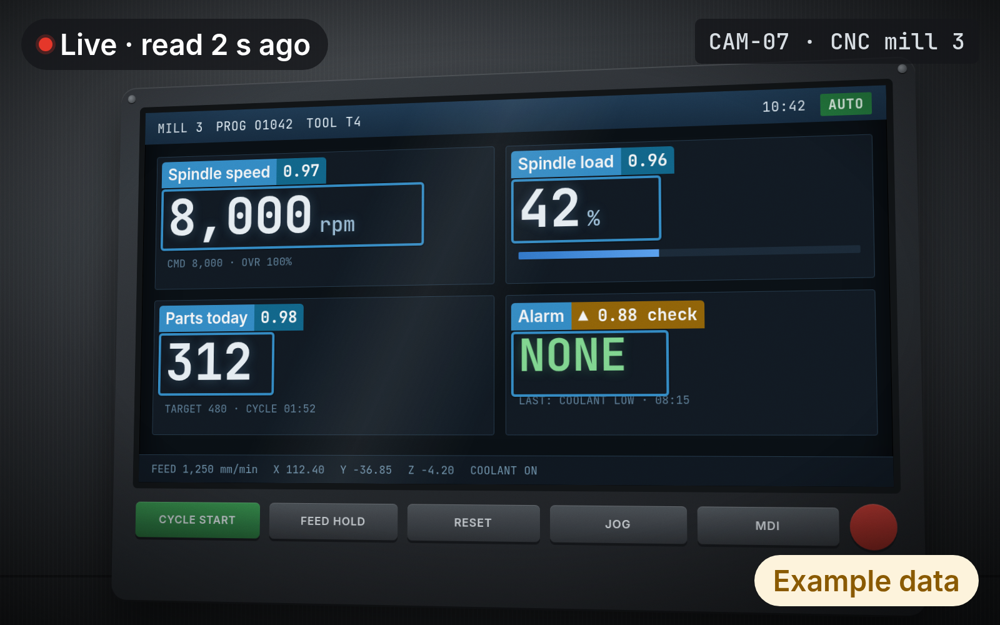
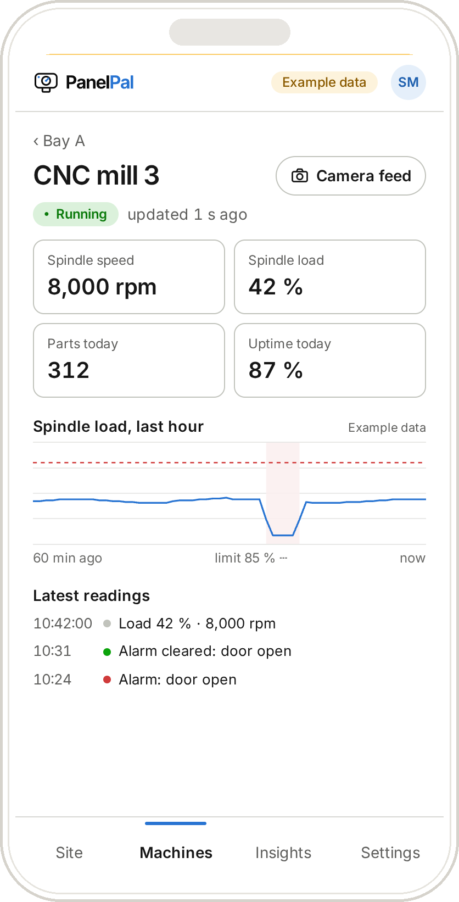
Example dataHow it works
The AI does the setup. Cameras feed the dashboard.
The AI does the work of a controls engineer: it finds what is on your floor, what to measure and how to show it.
Describe your site
Type a sentence. Add a floor plan or a few photos if you like. The AI finds and names your machines.
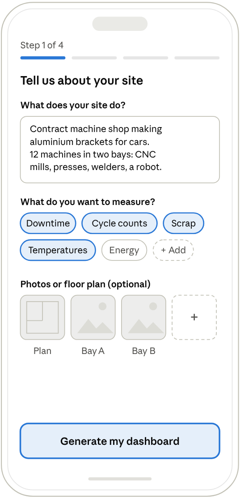
Get a dashboard
The AI suggests what to track on each machine and builds the dashboard. Change it by asking in plain English.
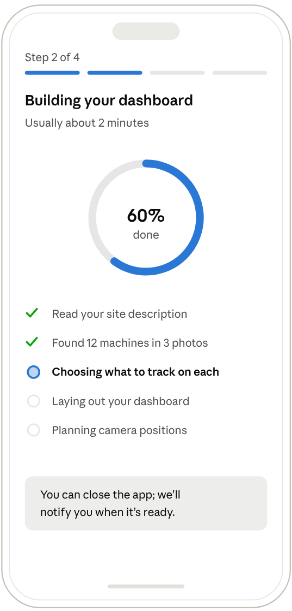
Feed it with cameras
Put a small camera in front of each screen or gauge. It reads the values every few seconds.
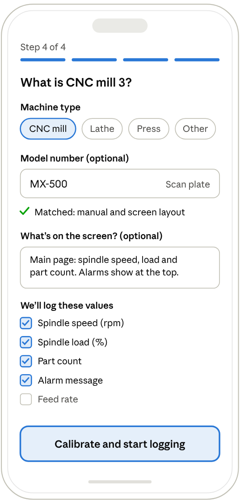
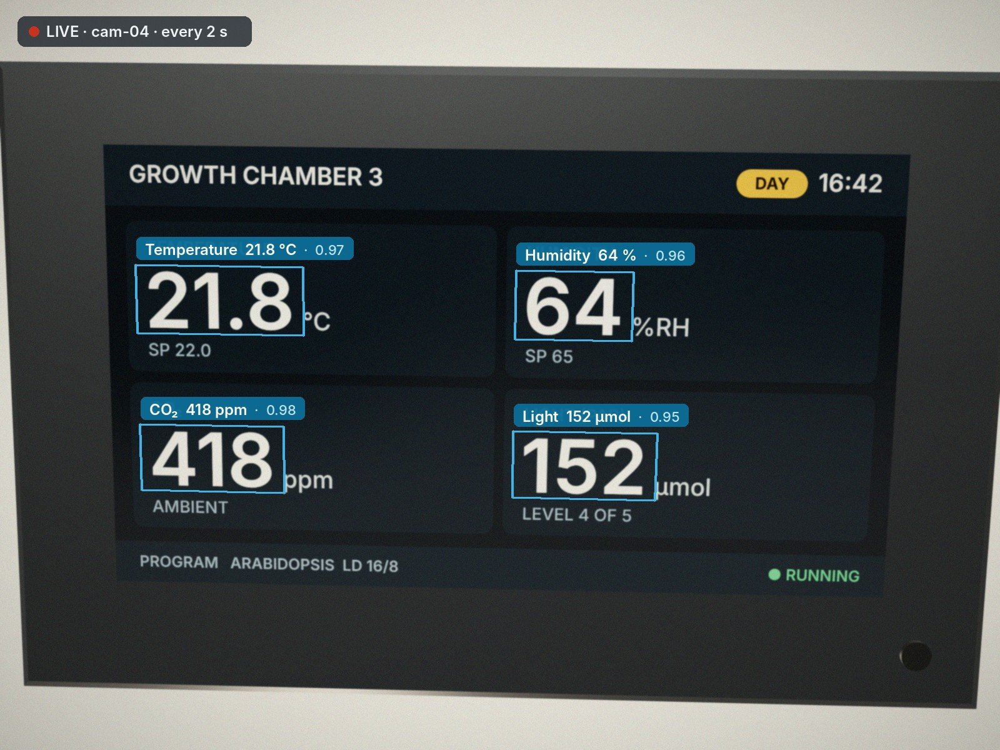
What the camera sees on a growth room controller · rendered mock-up · example data
The camera view
Every number comes with its picture.
- 1The AI marks each value one timeIt puts a box around each value and gives it a name. You confirm the boxes.
- 2The camera reads every 2 secondsIt reads only the boxed values. It does this on the device.
- 3Each reading has a confidence scoreA low score tells you to check the reading. If the camera loses the screen, the app shows "No signal". It does not guess.
- 4The frame is keptYou can compare any number with the image it came from.
What it can read
One camera, many kinds of reading.
Each value gets the reader that suits it. The vision model marks the area one time, and you confirm it.
| Reader | Reads | Examples | Status |
|---|---|---|---|
| Digits and text | Numbers and words on screens | Growth chamber and incubator controllers, balances, pH and EC meters, temperature controllers, motor drive displays, old PCs that run instrument software | In the demo |
| Dial | A needle's position on a printed scale | Hydraulic, pneumatic and vacuum gauges, CO₂ cylinder regulators, autoclave pressure, liquid nitrogen dewar levels, bimetal thermometers | Next |
| Counter | Rolling digit wheels | Water, gas and electricity meters, hour meters, mechanical cycle counters | Next |
| Colour | A state or a colour index | Stack lights and panel LEDs, chamber lights on or off, pH colour change, leaf greenness | Later |
| Level | How full something is | Sight glasses, hydroponic tanks, carboys, coolant and waste containers | Later |
| Presence | Whether something is there | A tray on a shelf, a door or guard open, a part in a fixture | Later |
| Motion | Running or idle | Shakers, stirrers, fans, conveyors, spindles | Later |
| Count | How many objects | Pots in a tray, parts in a bin | Later |
| Area | How much of an area one colour covers | Canopy cover per tray, spills, rust | Later |
Colour, level, presence, motion, count and area are simple filters on the same frames. They are indicators, not calibrated measurements, and the app labels them that way.
Camera hardware
It sits in front of the display. It never touches the machine.
These are rendered mock-ups, not photos.
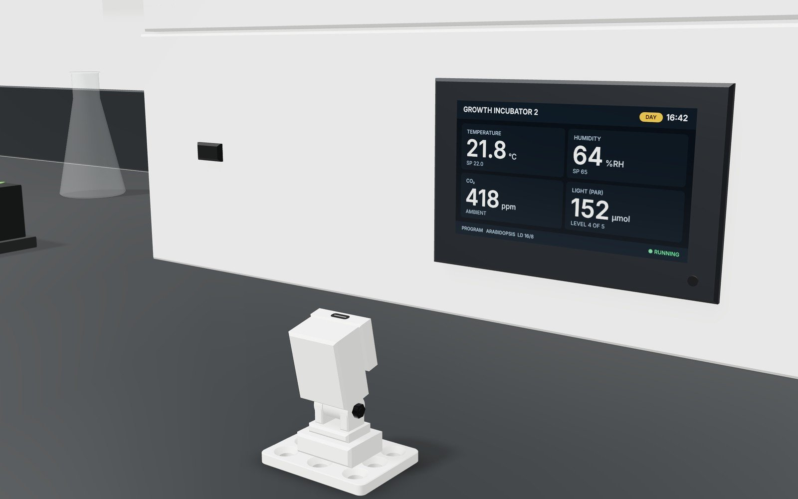
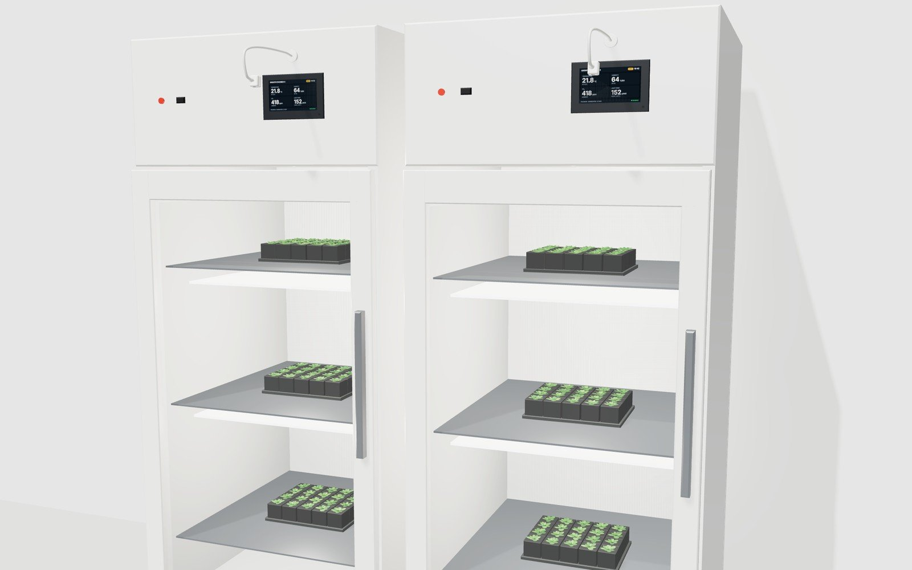
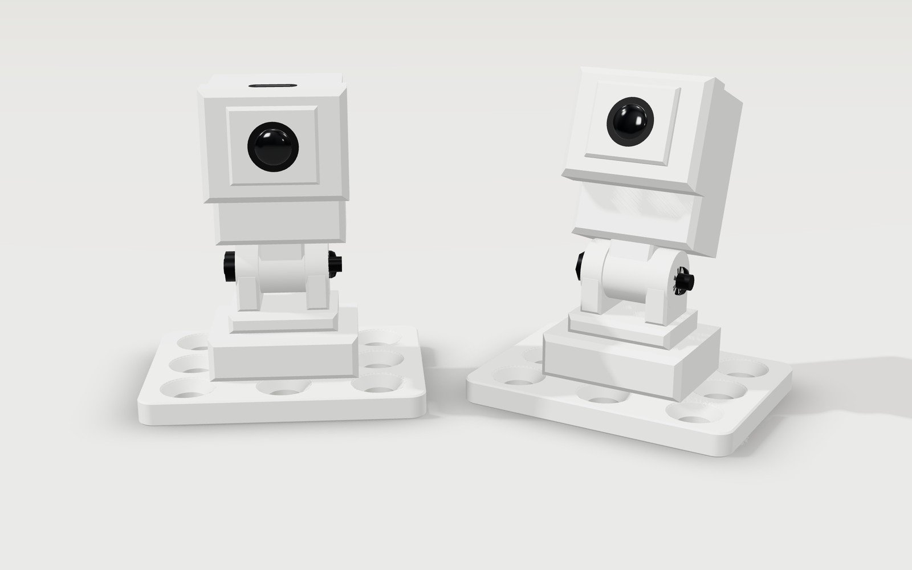
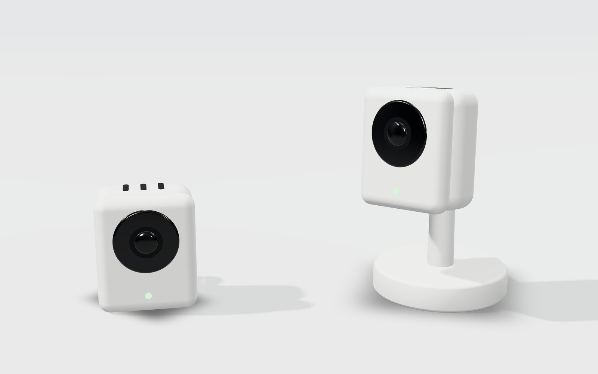
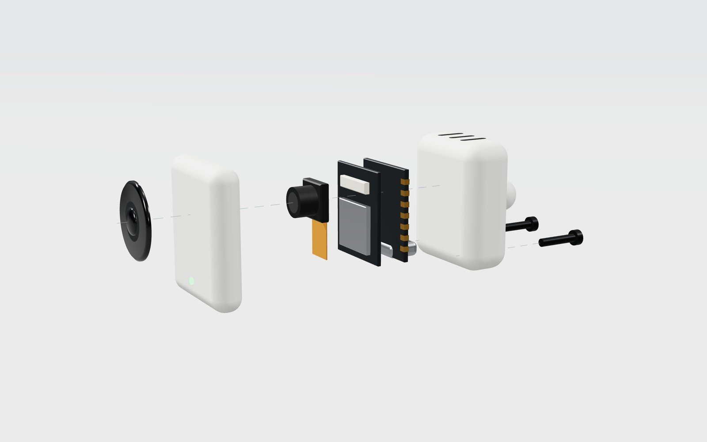
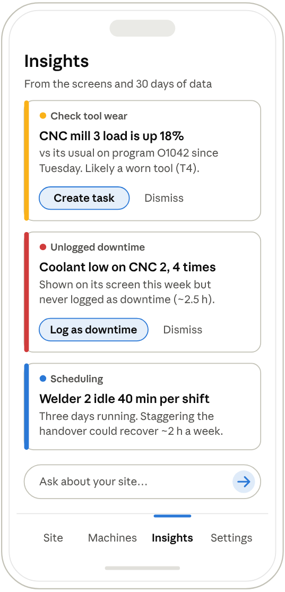
AI suggestions
An assistant that watches every screen for you.
Each card names the machine, the likely cause and one action. It can catch a warning that only ever showed on the machine's own screen.
Example data
Not a factory?
One device is enough to start.
A lab that wants one centrifuge on record can skip the layout. Describe it, point a camera at its display, and the app logs every run. Add more devices, or a whole site, later.
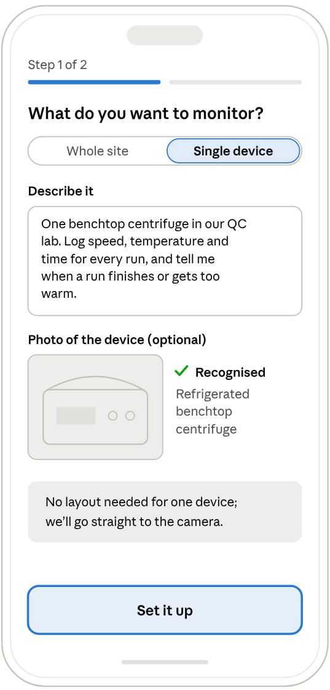
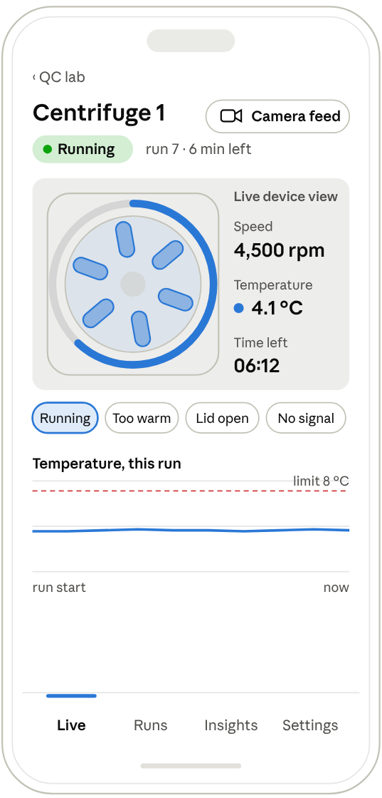
Plans
Every plan gets the layout. Higher plans draw it in more detail.
The AI setup and the first dashboard are free. Plans are a concept and can change.
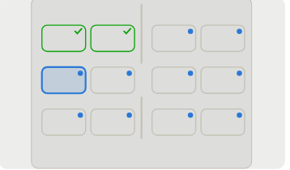
Free
- Dashboard built by the AI
- Live view for each machine
- 30 days of history
- Automatic recalibration
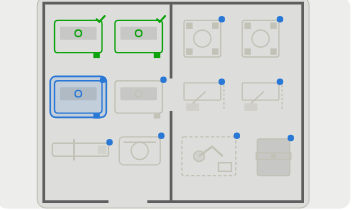
Pro
- Top-down plan of your floor
- Any number of machines
- Full history
- Alerts and shift reports
- AI analysis of trends and downtime
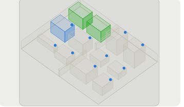
Business
- 3D model of the site you can rotate
- API and connectors (MQTT, OPC UA, ERP/MES)
- Audit trails for labs and food safety
- More than one site, single sign-on
Privacy & data
What the camera sees, and what we keep.
The camera sees only the screen
You point it at a display or gauge. It does not connect to the machine or its controller.
You choose what is read
The AI suggests values. You tick the ones to log.
You can check every number
Each reading keeps the frame it came from and a confidence score.
Where your data is stored
We will confirm this before launch. Ask us about it in your demo.
See PanelPal on your own screens.
Book a short demo, or join the waitlist and we will tell you when it is ready.